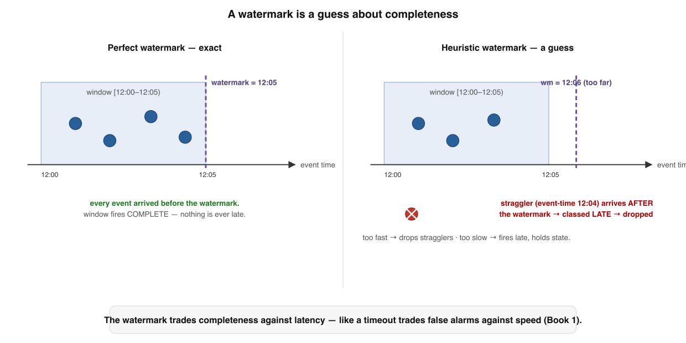
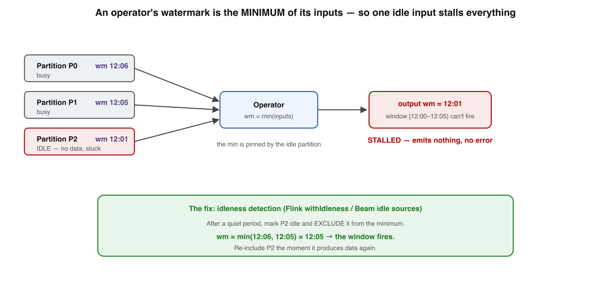
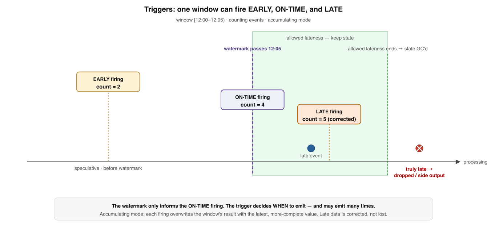

Watermarks — the completeness clock of streaming
Your bar: redraw — from memory — why a watermark is a guess, how it advances by a min rule, why one idle input freezes a whole pipeline, and the Dataflow-model insight that when a window fires is not the watermark. Grounded in Akidau et al.’s Dataflow Model 1 and the Flink/Beam docs. 3
One sentence holds the whole topic. Each level just unpacks one chip of it:
A watermark is a heuristic completeness claim in event time
that advances by the min of its inputs
trading completeness vs latency vs cost
and it informs, never decides, when a window fires
W is a moving lower bound chasing completeness — and the gap is skew.
What a watermark actually asserts
Strip the metaphor: it is one timestamp carried with the data, making a claim about completeness.
W asserts: "event time has advanced to W — no record with timestamp
≤ W arrives from here on." It turns "have I seen all of 12:00–12:05?" into a concrete
signal.
Is A single timestamp carried with the data: a monotonic lower bound on every future record’s event time.
Why it exists To convert the open-ended “have I seen all the data for this window yet?” into one concrete completeness signal.
Like (world) A “mail through <date> has all been delivered” stamp — letters dated earlier won’t show up after it.
Like (code) A timeout for failure detection: a heuristic the system commits to because it can’t wait forever for certainty.
✓ It’s an event-time lower bound — a claim about completeness, not wall-clock now
💧 Memory rule: A watermark is a timeout for completeness — a monotonic lower bound asserting no future event ≤ W will arrive.
Memory check
- What does
Wclaim, precisely? → no future record will have timestamp ≤ W - Monotonic means? → it only ever moves forward, never back
- Closest reliability primitive? → a timeout — a committed-to heuristic, not a fact
Perfect vs heuristic — the tension that defines streaming
Perfect is rare and clean; heuristic is what you actually run, and it’s wrong in one of two ways.

Perfect vs heuristic watermarks. Perfect never passes an unseen event, so nothing is ever late. Heuristic is a guess — too fast and stragglers drop; too slow and windows fire late while state piles up.
Perfect Needs perfect knowledge of timestamps (in-order partition, hard max delay). Exact → never any late data. Rare.
Heuristic Estimates progress, usually “max timestamp seen − bound B”
(bounded-out-of-orderness). Being an estimate, it errs.
| If the watermark is… | Then… | You lose |
|---|---|---|
| too fast (aggressive) | passes window-end before stragglers arrive; those events are now “late” | completeness — late data dropped |
| too slow (conservative) | lags real progress; windows fire long after their data is in | latency — results delayed, state held longer |
✓ It’s a policy; there is no setting that wins both — only one matched to how late your data runs
⚖️ Memory rule: A watermark trades completeness against latency — advance eagerly and drop stragglers, or conservatively and pay in delay and state.
Memory check
- When is a perfect watermark possible? → in-order source or a known hard max delay
- The common heuristic generator? → max-seen timestamp minus a bound B
- Too-fast costs ___, too-slow costs ___? → completeness; latency (+ state)
The min rule — and the idle-partition stall
Watermarks flow as markers between operators. One propagation rule causes the most common streaming incident.

The min rule & the idle-partition stall. An operator’s watermark is the minimum across its inputs. One idle partition pins the min and freezes every downstream window — even while the other inputs flow.
Rule An operator’s watermark = minimum of all input watermarks (held back further by buffered state with pending timers).
Why min You can’t claim “complete up to W” if even one input might still deliver something older than W.
The stall An idle input stops advancing → pins the min → downstream windows never fire. The classic silent streaming incident.
The fix Idleness detection: after a quiet period, mark the source idle and exclude it from the min; re-include on first record. 3
✓ Often a watermark held hostage by one silent input; fix is withIdleness, not
a restart
🧊 Memory rule: An operator’s watermark is the min of its inputs — so one idle partition freezes the whole pipeline until idleness detection excludes it.
Memory check
- How does an operator's watermark advance? → as the minimum of all its input watermarks
- Why the min, not the max or average? → the slowest input could still deliver old data
- One idle partition's symptom + fix? → silent stall; withIdleness to exclude it
Triggers — when to fire is not the watermark
The deepest idea, from the Dataflow Model: three questions everyone conflates are actually independent.

Triggers decouple firing from the watermark. A window can fire EARLY (speculative), ON-TIME (when W passes window-end), and LATE (again, as stragglers arrive) — so a trigger fires more than once.
| Accumulation mode | Each firing emits | Downstream must |
|---|---|---|
| Discarding | only what’s new since the last firing (a delta) | sum the deltas itself |
| Accumulating | the full result-so-far (overwrites the previous) | replace the prior value |
| Accumulating + retracting | a retraction of the old value plus the new one | apply both for exactness |
✓ The trigger fires — early, on-time, and late; the watermark only informs the on-time firing
🎯 Memory rule: Windowing = where, triggers = when, accumulation = how — so late data isn’t a guillotine; the window re-fires and corrects.
Memory check
- The three independent questions? → where (windowing), when (triggers), how (accumulation)
- How many times can a trigger fire? → many: early, on-time, late
- Why isn't late data a problem here? → late firing + accumulating mode corrects the result
Allowed lateness — and the three-way trade-off
Late firings can’t run forever. Allowed lateness is the horizon, and the third dial.
W passes window-end, state is kept for allowedLateness; late
events re-fire within it. Past the horizon, state is GC'd and truly-late events route to a
side output.
Allowed lateness The extra duration a window keeps its state after W
passes its end; late events within it re-fire.
After the horizon State is garbage-collected; later events are truly late → drop or route to a side output / dead-letter.
Fire early Lower latency, less complete. Wait for W → more complete, higher latency. Hold state longer → tolerate lateness, at memory cost.
Dials Watermark, triggers, allowed-lateness set completeness vs latency vs cost. You can’t max all three.
✓ Within allowed lateness it re-fires; past it, route to a side output — never silently, if you value your data
🎚️ Memory rule: Completeness vs latency vs cost — the three dials are watermark, triggers, and allowed lateness; pick the two your use case needs.
Memory check
- What is allowed lateness? → how long state is kept past window-end for late firings
- What happens to truly-late events? → drop or route to a side output / dead-letter
- The three dials of the trade-off? → watermark, triggers, allowed lateness
Same primitives, opposite dials — by workload
Grounding: the same windowing primitives, set to opposite ends, for different jobs. This per-workload judgement is the whole point.
| Workload | Wants | Dial settings |
|---|---|---|
| Fraud check | Low latency; tolerates re-firing & correction | aggressive watermark · early + late firings · short state |
| Billing rollup | Completeness; accepts delay | conservative watermark · on-time firing · long allowed lateness |
| Live dashboard | Fast, improving estimate | frequent early firings · accumulating mode · modest lateness |
| Exact financial sum | Correctness across late updates | accumulating + retracting · long allowed lateness · side output for the rest |
| Multi-source join | Not freezing on a quiet input |
|
Pattern to notice: the dials don’t change the engine — they change which of completeness, latency, and cost you pay for. Naming that trade-off out loud is the senior move. 2
Retrieval practice — mix the levels
Reading builds fluency (feels familiar). Recall builds storage (lasts). Answer from memory — instant feedback.
Q1. A watermark W flowing through a pipeline asserts that…
Q2. A heuristic watermark set too fast (too aggressive) costs you…
Q3. A pipeline emits nothing despite healthy input because one partition went idle. The cause is…
Q4. In the Dataflow model, what decides when a window emits a result is the…
Q5. Allowed lateness primarily controls…
Q6. "Accumulating + retracting" mode is needed when downstream…
Reconstruct the topic from a blank page
Write the five levels in order, one line each, with nothing on screen. Then reveal and compare — gaps are your next drill.
1 Watermark = monotonic lower bound; no future event ≤ W (a timeout for completeness) ·
2 Perfect (rare, no late data) vs heuristic (a guess; too fast drops, too slow lags) —
completeness vs latency · 3 Operator W = min(inputs); one idle input stalls everything →
withIdleness · 4 Where=windowing, When=triggers (early/on-time/late, many
times), How=accumulation; watermark only informs · 5 Allowed lateness keeps state for
late firings, then GC + side output; dials = completeness/latency/cost.
I’m your teacher — ask me anything. Say “grill me on watermarks” for mixed no-clue questions, or drop a real pipeline and I’ll set its watermark / trigger / allowed-lateness dials with you on the completeness↔latency↔cost triangle. Want a spaced, interleaved drill set? Just ask.
Interview — pick your bar
Answer out loud in ~60s, then reveal. Core = recall · Senior = trade-offs & failure modes · Staff = synthesis under ambiguity · System Design = open design round (a different axis, not a harder level).
Event time vs processing time — define each and why they diverge.
Define a watermark precisely, and say why it's like a timeout.
Name the window types — tumbling, sliding, session — and what each is for.
What is allowed lateness, and what happens to data past it?
Perfect vs heuristic watermark — when can you have a perfect one, and what does it buy?
Your pipeline is processing records but emitting nothing, with no error. Diagnose.
withIdleness / idle-source handling) to exclude the idle input, re-include on first record. Not a crash, not back-pressure.Why is the propagation rule a MIN and not a max or average?
"But what about late data?" — answer it without dropping anything.
Separate windowing, triggers, and accumulation. Where does the watermark fit?
Argue that there is no "correct" watermark setting.
How do triggers, allowed lateness, and accumulation mode interact to give correct-but-eventually-consistent output?
- Anchor on event time, not processing time, and explain why (reproducibility under replay and out-of-order arrival).
- Pick the window type from the question (tumbling / sliding / session) and justify it.
- Choose a watermark strategy (perfect vs heuristic; the bound B) and place it on the completeness↔latency↔cost triangle.
- Decouple triggers (when to fire: early / on-time / late) from the watermark, and choose an accumulation mode.
- Set allowed lateness and route truly-late data to a side output — never drop silently.
- Handle idle / skewed inputs (min-rule freeze) with idleness detection.
- Name the observability: watermark skew, dropped-late count, window state size.
Design event-time windowing for an out-of-order stream (e.g. mobile clients with intermittent connectivity).
Design a monthly billing rollup vs a real-time fraud signal on the same event stream.
★ Cheat sheet — term → what it actually is
Mental models: Watermark = a timeout for completeness · Perfect = never late, rare · Heuristic = a guess, too-fast drops / too-slow lags · Min rule = slowest input governs · Idle stall = silent freeze, fix with idleness detection · Triggers = when (many times) · Accumulation = how firings relate · Allowed lateness = how long state lives.
Translation table
| Term | What it actually is |
|---|---|
| Watermark W | Monotonic lower bound: no future event ≤ W |
| Skew | How far W lags true event-time progress |
| Perfect vs heuristic | Exact (no late data) vs estimated (late data happens) |
| Min rule | Operator W = min(input watermarks); slowest governs |
| Idle-partition stall | Silent input pins the min → downstream freezes |
| Trigger | Decides when to emit: early / on-time / late |
| Accumulation mode | Discarding / accumulating / +retracting |
| Allowed lateness | How long window state survives for late firings |
| Side output | Where truly-late events go (a dead-letter) |
Three rules for the on-call chair
① A watermark is a guess, not a fact — a timeout for completeness. ② An operator’s watermark is the min of its inputs; one idle input freezes everything — reach for idleness detection. ③ When a window fires is the trigger, not the watermark — so late data corrects, it doesn’t have to drop.
★ Review guide & what to read next
5-min (weekly) Don’t re-read — recall. Say the one sentence; redraw the two clocks + the min rule from memory; recite the five rules; name the three dials blind.
30-min (when stalled) Blank-page reconstruct all five levels; re-derive why min is forced and why triggers must decouple from the watermark; then set the dials for one real pipeline of your own.
Read next, in order: ① The Dataflow Model — Akidau et al., VLDB 2015 (Level 4, read first) · ② Streaming 101 / 102 — Akidau (the watermark intuition) · ③ Flink — Generating Watermarks & idleness (Level 3) · ④ Beam — triggers & accumulation (Level 4–5).
📖 Primary source: Streaming Systems (Akidau, Chernyak & Lax, O’Reilly 2018) — the definitive treatment of watermarks and triggers.
These notes reflect my current understanding and are updated as I learn, build, and discover better explanations.